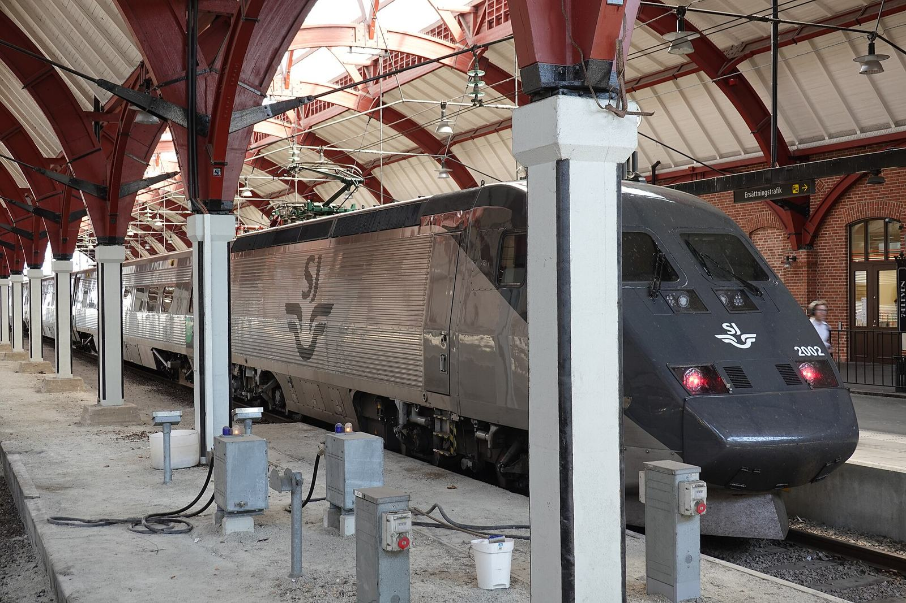
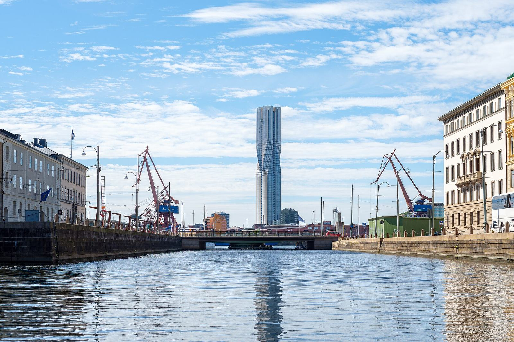
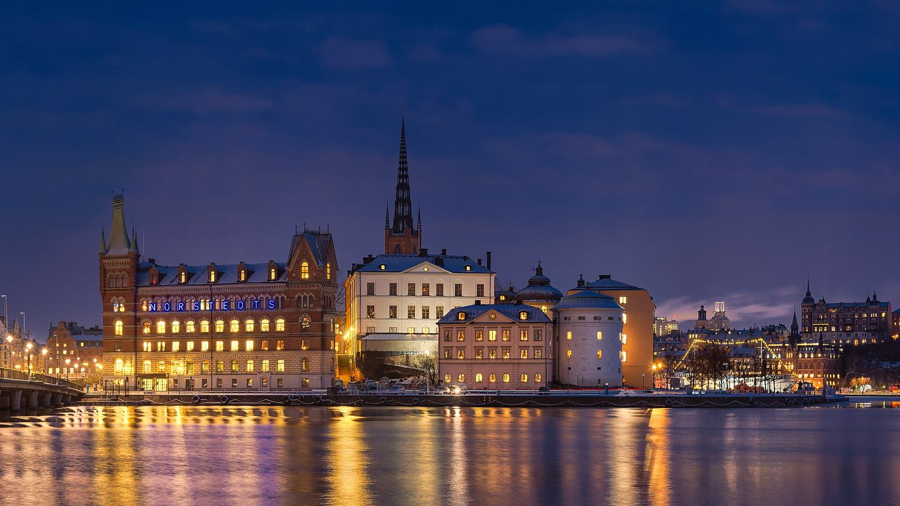
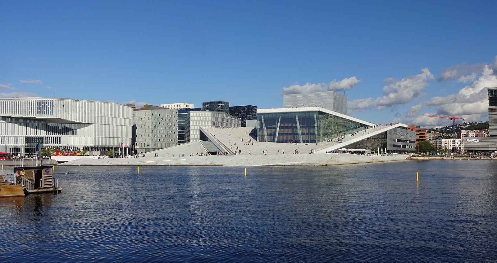
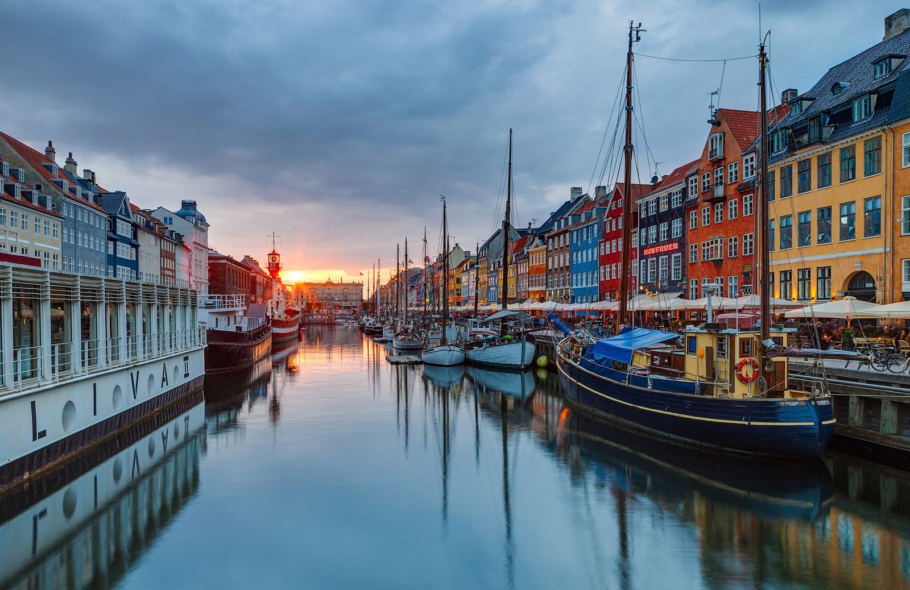
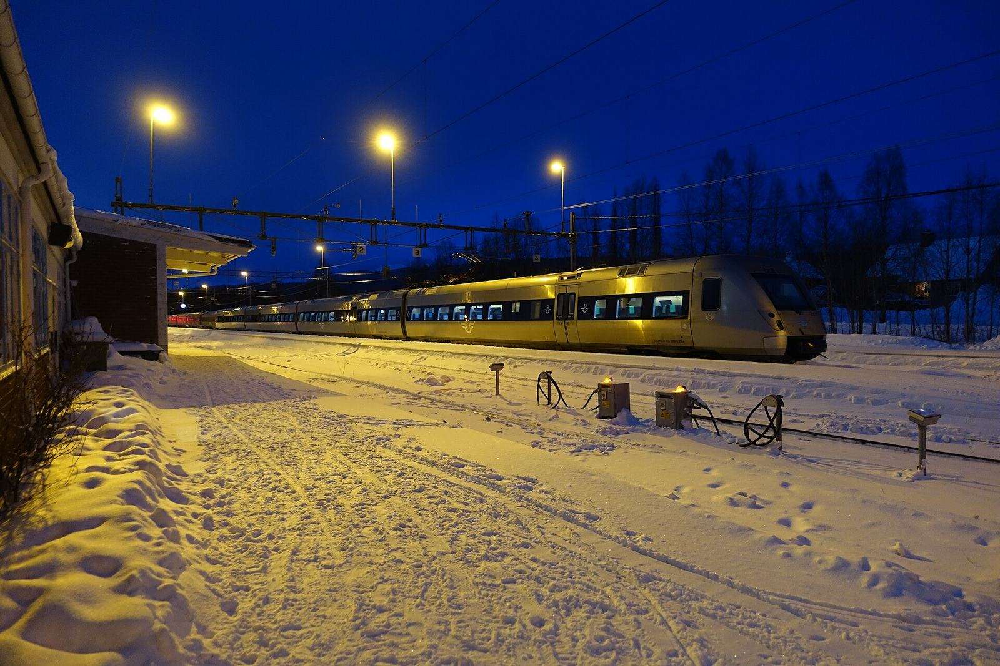

Resmål och sträckor
Storstad, fjäll eller en natt på tåget. Här är några av sträckorna vi kör och hur lång tid de tar.
Välj resmål
Visar 7 av 7 resmål
-

Göteborg
Snabbaste avgången tar cirka 3 h 01 min, och vissa tider går det flera tåg i timmen. Det är också här de nya snabbtågen ska börja köra.
-

Malmö
Från Göteborg tar det 2 h 18 min. Ska du vidare till Köpenhamn byter du till Öresundståg här.
-

Stockholm
Navet för nästan alla våra sträckor. Reser du i 1 klass kan du vänta i SJ Lounge på Stockholm C.
-

PopulärOslo
5 avgångar per riktning på vardagar, 3 på lördagar och 4 på söndagar. I början av 2027 öppnar vi en lounge på Oslo S.
-

Köpenhamn
Direkttågen från Stockholm är tillfälligt inställda på grund av tågbrist. Du kommer hit med ett byte till Öresundståg.
-

Åre och Duved
Kvällståget till fjällen går varje dag och är nu permanent. Från december kör vi också nattåg Stockholm–Östersund–Duved.
-
 Nattåg
NattågAbisko och Narvik
Nattåget går via Umeå, Luleå och Kiruna, med sov- och liggvagn hela vägen till Narvik. Julresorna 13 december–10 januari går att boka.
Fler sträckor
Tryck på en sträcka så söker du resa direkt.
Restiderna kommer från SJ:s egna uppgifter hösten 2026 och kan ändras. Sök din resa för aktuella tider.